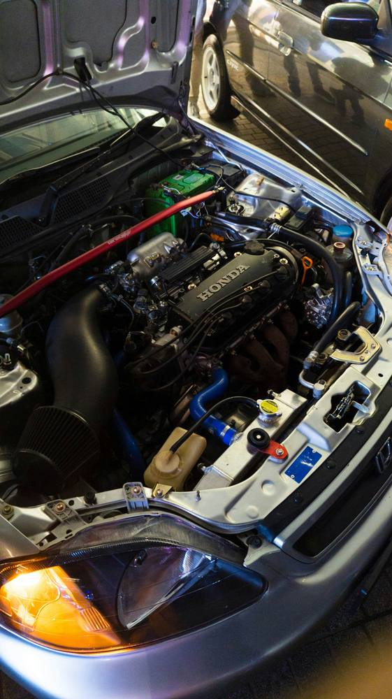

An independent, on-site inspection before you hand over any money — so you know exactly what you're buying, not what the seller tells you.

A used car can look perfect from the driver's seat. What matters is what's happening underneath — the stuff a private seller either doesn't know about or won't mention. That's what a proper inspection is for.
A thorough visual, mechanical and diagnostic check of the car as it sits — engine bay, underbody-visible areas, and a diagnostic scan for stored fault codes, plus a test drive where possible.
Once the inspection's done, you get a plain-English rundown of what I found — genuine issues, things worth negotiating on, and anything that needs attention soon. No sales pitch, no pressure either way.
Plus a small call-out fee based on the vehicle's location — always confirmed upfront, no surprises.
Yes — private sales are actually where a pre-purchase inspection matters most, since there's no dealer warranty to fall back on. I'll come to wherever the car is.
Usually 45–60 minutes on site, depending on the vehicle. You'll have the findings the same day.
I'll tell you exactly what it is, roughly what it'd cost to fix, and let you decide — whether that's walking away, negotiating the price, or going ahead with eyes open.
Not necessarily, but it's a good chance to walk through the findings in person if you can make it. Otherwise I'll call you through it afterwards.
Call, SMS, or use the full enquiry form on our home page — we'll get back to you within a few hours.
Dunsborough · Quindalup · Vasse · Yallingup · Busselton · Cowaramup · Margaret River